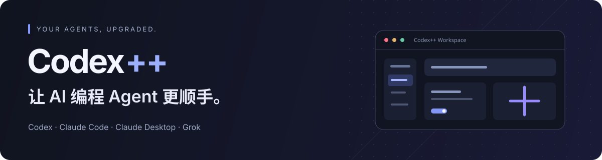
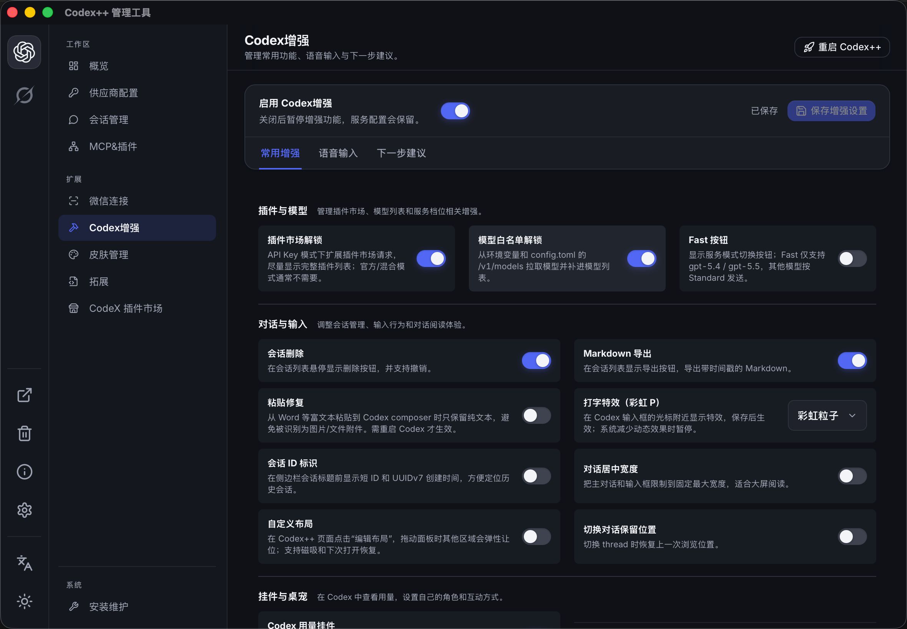
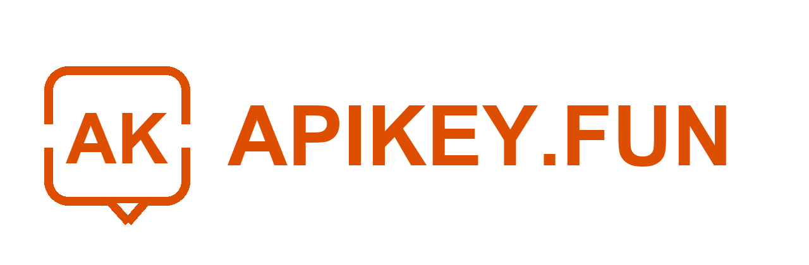
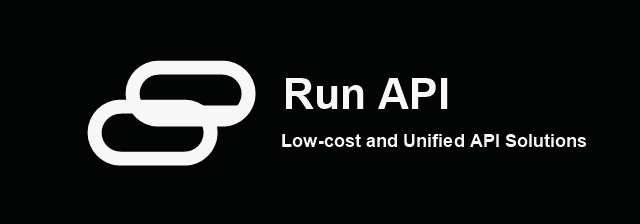
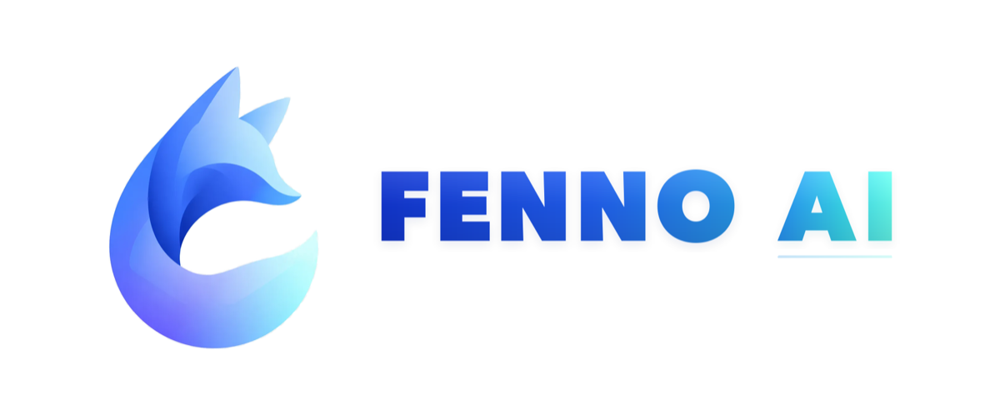
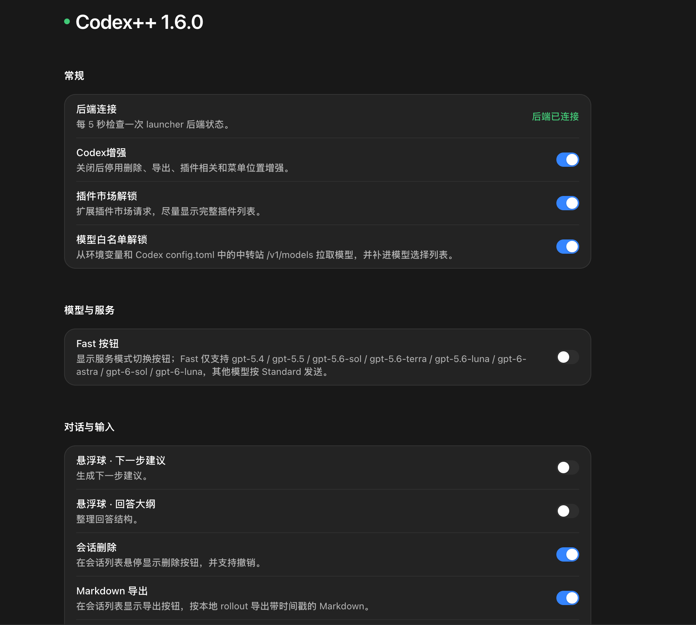
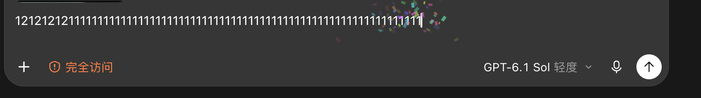
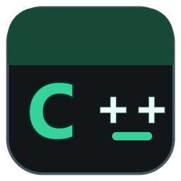

给 Codex 桌面应用加一点「++」。
统一管理供应商与模型，让会话更好用，也让工作区更像你。


下载最新版 ↗ · 快速上手 · 功能一览 · 反馈问题 · English

从供应商配置到界面增强，一个管理工具就够了。
Codex++ 是面向 OpenAI Codex / ChatGPT 桌面应用的外部启动器与管理工具，通过 CDP 与本地辅助服务提供供应商切换、协议转换、会话管理和界面增强。它不修改官方应用的 app.asar，也不向安装目录写入补丁文件。
交流与支持
遇到问题请通过 GitHub Issues 提交，附上系统、Codex++ 版本、复现步骤与已脱敏的日志。欢迎分享拓展、主题和使用经验。
QQ 交流 4 群 · 1127858981 · Telegram 频道 · LINUX DO
感谢赞助商
感谢以下赞助商对项目的支持。服务范围、价格与活动以各平台官网说明为准。
JOJO Code
JOJO Code 提供稳定、价格合理的 API 中转服务，支持 GPT-6.1、GPT-6、Fable 5.1、Claude Opus 5.5 等模型与图像能力，适合日常开发、团队协作和长期项目工作流。
| 🏆 赞助商 🏆 | 介绍 |
|---|---|
| JOJO Code JOJO Code 提供稳定、价格合理的 API 中转服务，支持 GPT-6.1、GPT-6、Fable 5.1、Claude Opus 5.5 等模型与图像能力，适合日常开发、团队协作和长期项目工作流。 |
|
|
 |
APIKEY.FUN 感谢 APIKEY.FUN 赞助了本项目！APIKEY.FUN 是一家致力于提供开放、稳定、高性价比的全球主流大模型的 AI 中转站。平台支持 Claude、OpenAI、Gemini 等热门模型的 API 中转服务，价格低至官方原价的 7%。通过专属链接注册 APIKEY，可享受最高充值永久 95 折优惠。 |
|
 |
RunAPI RunAPI 是高效稳定的 API 聚合平台，一个 API Key 即可访问 OpenAI、Claude、Gemini、DeepSeek、Grok 等 150+ 主流模型，低至 1 折，兼容 Claude Code、OpenClaw 等工具。 |
|
 |
FennoAI FennoAI 是一家稳定、高效的 API 中转服务商，目前主要提供 Codex 中转服务，兼容 OpenAI 及 Anthropic 协议，可灵活接入 Codex、Claude Code、OpenCode 等主流编程工具，稳定支撑千亿 Token/日的企业级调用需求，支持国内及海外主体公对公结算、开票。通过专属链接购买订阅，仅需 1.99 美元即可获得价值 50 美元的 Coding Plan 额度；邀请好友购买最高可获得 20% 返佣。 |
| 七牛云 感谢七牛云 AI 赞助本项目！七牛云 AI 是七牛云（02567.HK）旗下企业级大模型 MaaS 平台，可一站式调用全球 150 多个主流模型，兼容全球主流模型厂商协议，覆盖文本、图像、音频、视频、文件处理等全模态能力，服务超过 169 万企业及开发者用户。企业用户可免费领取 1200 万 Token，邀请好友最高可获得百亿 Token。 |
想支持项目或展示品牌？联系维护者。
功能一览
🔌 供应商自由切换官方登录、官方登录 + API、纯 API 与聚合供应商。支持 Responses / Chat Completions、模型测试与 Provider Doctor。 |
🧠 每个模型，各有空间按模型设置上下文窗口与自动压缩阈值，支持模型元数据导入；按供应商选择 MCP、Skill 和 Plugin。 |
💬 会话管理更省心本地会话扫描、删除与撤销、批量管理、Markdown 导出、Token 历史、项目移动和线程 ID。 |
🧩 拓展你的工作区浏览与管理社区用户脚本，按需添加模型选择、用量统计等能力；另有 MCP、Skill 与 Codex 插件管理。 |
✨ 输入与阅读，都顺手语音输入、粘贴修复、会话宽度、滚动位置恢复、下一步建议、回答大纲与光标打字特效。 |
🐳 Agent 桌宠，工作也有陪伴在 Codex 里放一只桌宠，点一下会压扁并播放音效；图片从内置图库挑选或换成自己的。 |
另外，微信连接支持扫码连接本机 Codex，每个联系人映射到独立会话，并可配置允许访问的微信用户。
看看它能做什么
把常用增强放到手边
在管理工具中集中配置，在 Codex 内直接使用。插件市场与模型列表、会话操作、输入行为和阅读布局，都可以按自己的习惯开关。
展开查看 Codex 内的增强设置

让拓展适应你的工作流
从拓展市场发现社区脚本，为工作区添加用量面板、模型选择器、提示词优化等工具。你可以按需安装、启停，也可以编写自己的脚本。

这里的「拓展」是 Codex++ 用户脚本，与 Codex 官方插件市场是两个入口。社区脚本的服务配置和使用要求以各自说明为准。开发说明见 用户脚本热重载。
认真工作，也可以有点趣味
光标打字特效
彩虹粒子、烟花与星光，让输入多一点反馈。可随时关闭，系统减少动态效果时暂停。

Agent 桌宠默认关闭，可在管理器「Agent 桌宠」页开启，目前支持 Codex。图片在运行时联网拉取并缓存在本机，详见 Agent 桌宠说明。
快速上手
1. 下载适合你的安装包
前往 GitHub Releases，选择对应平台与架构：
| 你的设备 | 安装包 |
|---|---|
| Windows · x64 | CodexPlusPlus-*-windows-x64-setup.exe |
| macOS · Apple Silicon | CodexPlusPlus-*-macos-arm64.dmg |
| macOS · Intel | CodexPlusPlus-*-macos-x64.dmg |
Codex++ 配合官方桌面应用使用，首次启动前请确认本机已安装对应的 Codex / ChatGPT 应用。
2. 打开管理工具，完成配置
安装后有两个入口：
| 入口 | 用来做什么 |
|---|---|
| Codex++ 管理工具 | 检查应用路径与运行状态，配置供应商、模型和增强功能，管理更新与诊断。 |
| Codex++ | 静默启动官方桌面应用，并加载已保存的供应商与增强配置。 |
首次使用先打开 Codex++ 管理工具，确认应用路径，再选择供应商模式，按需开启增强功能并保存。
3. 从 Codex++ 入口开始工作
从 Codex++ 启动桌面应用。依赖注入脚本的设置通常需要保存后重启 Codex++ 才会生效。
所有界面增强均可单独关闭；关闭增强总开关后，仍可使用供应商与启动管理能力。后续可在管理工具的「关于」页检查并启动更新。
供应商与模型
选一种适合你的使用方式
| 模式 | 适用场景 |
|---|---|
| 官方登录 | 使用 ChatGPT / Codex 官方账号。 |
| 官方登录 + API | 保留官方登录状态与插件入口，模型请求始终走配置的兼容 API。 |
| 纯 API | 使用自定义 Base URL / Key，无需官方账号。 |
| 聚合供应商 | 在多个 API 供应商之间故障转移，或按会话、请求、权重轮转。 |
官方登录 + API 模式下，模型请求不消耗官方额度；它没有「先用官方额度，耗尽再切 API」的行为。Chat Completions 供应商可通过本地代理转换为 Codex 使用的 Responses 协议。
给每个模型设置自己的上下文窗口
在模型列表中使用窗口后缀，例如：
deepseek-v4-pro[1M]
your-model[200K]
another-model[128000]
支持 1M、200K 或纯数字。Codex++ 会生成独立的 model_catalog_json，让 Codex 按当前模型使用对应窗口；请按实际供应商能力填写。未指定后缀的模型继续使用供应商级上下文配置。
切换供应商时会先保存当前配置，再写入目标配置。API Key 保存在本机，提交反馈前请隐藏密钥与认证信息。
常见问题
启动后，为什么没有 Codex++ 菜单？
确认从 Codex++ 入口启动。打开管理工具的「安装维护」与「关于」页面，检查应用路径、启动状态和诊断日志。
切换供应商后，请求为什么失败？
先在供应商详情中运行模型测试或 Provider Doctor，确认协议、Base URL、Key 与模型匹配。纯 API 和官方登录 + API 使用不同的认证位置，不要手工复制两种模式的 auth.json。
增强功能可以关闭吗？官方应用更新后还能用吗？
可以分别关闭，也可以关闭增强总开关。Codex++ 依赖官方桌面应用的页面结构、CDP 和本地数据格式；官方应用更新后，部分功能可能需要跟随适配。修改供应商配置或会话数据前，请保留备份。
配置、会话和日志存在哪里？
设置了 CODEX_HOME 时，Codex 主目录以该变量为准；否则使用 ~/.codex。
| 数据 | 位置 |
|---|---|
| Codex 配置与登录状态 | ~/.codex/config.toml、~/.codex/auth.json |
| 本地数据库 | 优先 ~/.codex/sqlite/*.db，旧版回退 ~/.codex/state_5.sqlite |
| Codex++ 状态与日志 | ~/.codex-session-delete/ |
| Provider 同步备份 | ~/.codex/backups_state/provider-sync |
一起把「++」做得更好
欢迎修复问题、完善文档、开发拓展，或分享你的使用建议。感谢每一位贡献者，也感谢帮助定位问题、测试版本和支持项目的人。
代码贡献者头像由 contrib.rocks 生成，点击查看贡献记录。
开发与本地检查
前端位于 apps/codex-plus-manager，核心 Rust 库位于 crates/codex-plus-core，数据层位于 crates/codex-plus-data，界面注入脚本位于 assets/inject。
# 前端检查（先在 apps/codex-plus-manager 安装项目依赖）
cd apps/codex-plus-manager
npm ci
npm run check
npm run vite:build
# Rust 检查（回到仓库根目录）
cd ../..
cargo fmt --all -- --check
cargo test
cargo build --release
修改 renderer 注入分片后，运行 node scripts/assemble-renderer-inject.mjs 重新组装产物。
Star History
如果 Codex++ 对你有帮助，欢迎 点一颗 Star。
曲线由 Star History 提供；在线图表与贡献者头像依赖第三方服务加载。

Codex++ · 让 Codex 更顺手。
Copyright © 2026 BigPizzaV3 · AGPL-3.0-only
CodexPlusPlus 的修改与分发、通过网络提供修改后版本的源代码义务，以 GNU AGPL v3.0 为准。许可证覆盖本项目自身代码，第三方素材遵循各自声明；不授予 OpenAI、ChatGPT、Codex 商标或应用资源的权利。